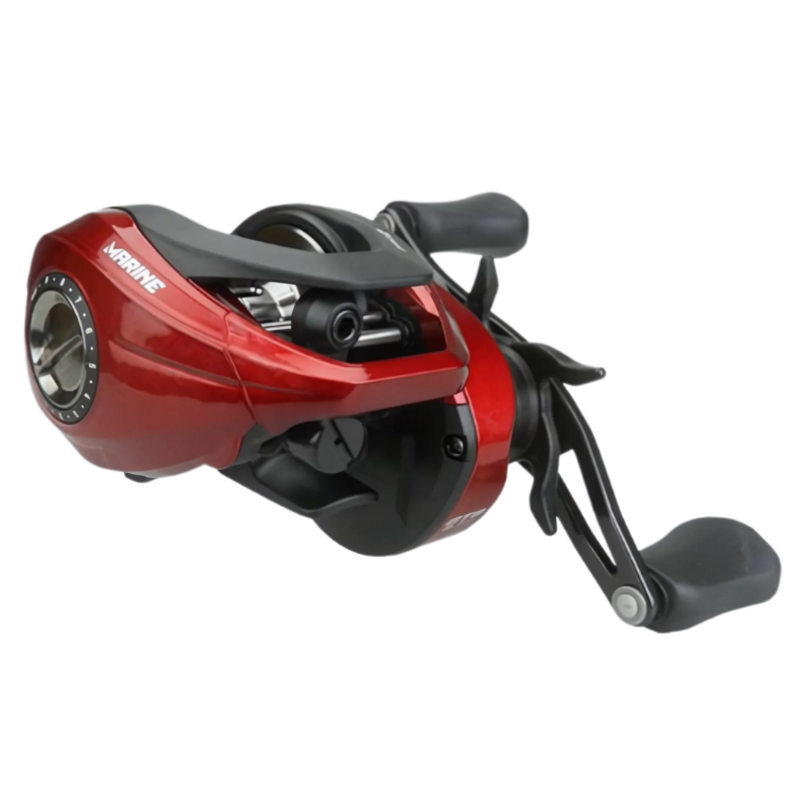

Lista de Produtos
"Quem vive a verdadeira paixão pela pesca sabe: escolher produtos de qualidade não é luxo, é necessidade. Seja a resistência de um bom equipamento, a precisão de um acessório ou a eficiência da isca ideal — cada detalhe faz a diferença entre um dia comum e uma grande pescaria. Invista no que realmente importa e garanta momentos inesquecíveis à beira d’água."
Isca Nelson Nakamura Zig Zarinha 90
Tamanho: 9cm
Peso: 12gr
R$ 37,90/cadaIsca OCL Lures Baca Popper 75 by Fábio Baca
Tamanho: 7,5 cm
Peso: +/- 13gr
R$ 58,40/cadaIsca Marine Sports Brava 77
Tamanho: 7,7 cm
7,2gr
R$ 41,39/cadaIsca Rebel Jumpin Minnow T20
Tamanho: 11,4 cm
Peso: 23gr
R$ 80,99/cada

Carretilha Marine Sports Titan Pro 2 12000
Carretel de alumínio
Drag máximo (freio): 5,5kg
R$ 553,49/cadaCarretilha Maruri Juice JU7 - Pink
Corpo em grafite
Drag máximo (freio): 5kg
R$ 321,29/cadaCarretilha Albatroz Alpha 60
Carretel de Alumínio Anodizado
Sistema On/Off Bait Clicker
R$ 433,12/cadaCarretilha Maruri Robust 10
Carretel de alumínio
Drag máximo (freio): 5kg
R$ 593,99/cada